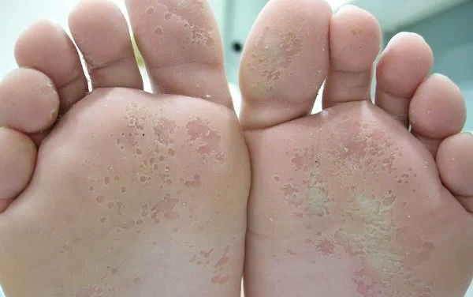
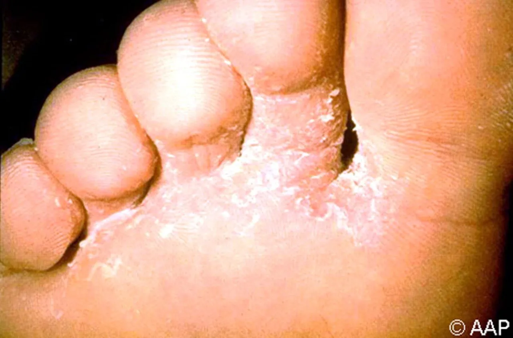
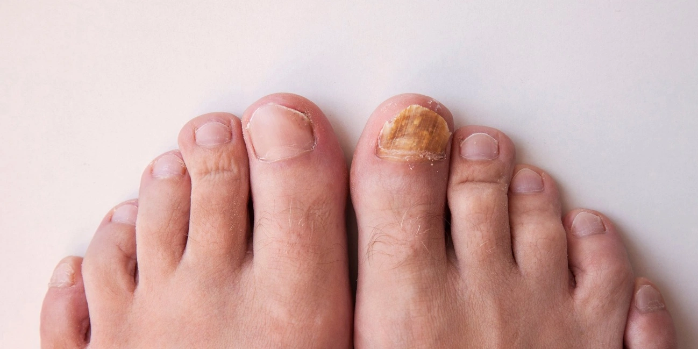

En Podología Arlanzón tratamos una multitud de infecciones que pueden invadir o extenderse en los pies.
El pie de atleta es una infección causada por hongos, que normalmente aparece en los dedos de los pies. El hongo ataca especialmente esta zona porque los zapatos crean un ambiente cálido y húmedo. Además de en los espacios interdigitales, también se puede presentar en los talones y en los laterales. Es la infección fúngica más común, denominándose también tiña del pie o tiña podal. Los últimos estudios demuestran que se trata de una patología en crecimiento. Los factores que elevan el riesgo, además de con el tipo de calzado, están relacionados con el ocio y el deporte, así como con algunas patologías vasculares, metabólicas y del sistema inmune.

Son causadas por diferentes tipos de hongos, incluyendo a los dermatofitos y las levaduras. Estos organismos invaden y se desarrollan en la queratina muerta, siendo esta proteína parte de la piel, cabello y las uñas. Existen varios tipos de infecciones fúngicas, que se dividen en diferentes grupos dependiendo de qué tipo de hongo está involucrado.

El pie de atleta es una de las infecciones fúngicas de la piel más frecuentes. Es causada por un hongo que crece en áreas cálidas y húmedas, por ejemplo, entre los dedos y planta del pie. Entre los síntomas más comunes son las escamas, picazón, enrojecimiento, así como grietas blancas entre los dedos. Una persona puede infectarse con el pie de atleta al caminar descalza sobre suelos húmedos y contaminados, tales como en duchas, piscinas o saunas.
Causas: El pie de atleta es contagioso y se puede transmitir por contacto directo, por los zapatos y calcetines, así como en piscinas o duchas. Al ser común la infección entre los deportistas que utilizan estas instalaciones, el término pie de atleta se ha popularizado. El riesgo puede aumentar al llevar zapatos cerrados, si se mantienen los pies húmedos por un largo período de tiempo y cuando hay una lesión en las uñas o en la piel. Los hongos que provocan el pie de atleta son de la familia de los dermatofitos y se caracterizan porque se nutren de la queratina de la piel.
Son especialmente infecciosos 4 de ellos:
Síntomas : Los síntomas más comunes del pie de atleta son:
Además, si el hongo se encuentra en las uñas suelen presentar decoloración, engrosamiento e incluso podrían desprenderse.
Tratamientos: Existen cremas o polvos antifúngicos para el tratamiento del pie de atleta, que se pueden adquirir en la farmacia. Sin embargo, si la infección no mejora en 2- 4 semanas, se recomienda una visita a nuestra clínica para que el médico valore la patología e instaure el tratamiento más adecuado. El tratamiento inicial consta de antimicóticos (clotrimazol, miconazol o tolnaftato) por vía tópica. Es recomendable seguir el tratamiento hasta dos semanas después de que hayan desaparecido los síntomas para evitar que haya una recidiva. En aquellos casos en los que hay una infección bacteriana asociada, puede ser necesario el uso de antibióticos por vía oral.

Los hongos en uñas son infecciones que suelen comenzar en el borde de la uña y se extienden poco a poco hasta la base. Tienden a tomar un largo tiempo para desarrollarse. Los signos más notables son la alteración del color y el deterioro de la uña, afectado también el tejido circundante. Cuando la infección ha tomado fuerza, puede llegar a ser muy doloroso usar zapatos, ya que las uñas suelen engrosarse y desprenderse. La infección por hongos en las uñas puede ser ocasionada por diferentes tipos de hongos que se hayan extendido hacia esta zona del pie. Para todo tipo de infecciones, no dudes en consultarnos.